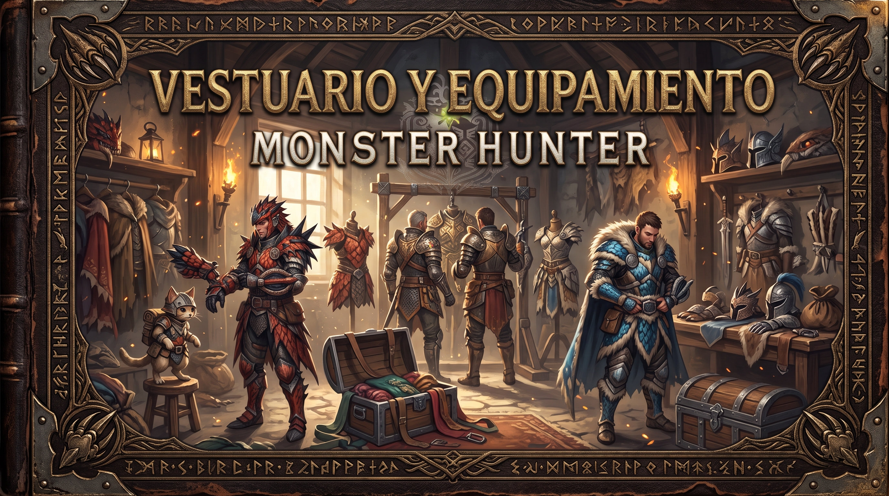

Yelmo
La pieza de cabeza aporta defensa y puede incluir habilidades.
Codex VELORA · Monster Hunter
MONSTER HUNTER CÓDICE
Biblioteca de fauna, equipo y expediciones
Tomo III · Armaduras y habilidades

Las piezas de armadura protegen al cazador y pueden aportar habilidades útiles. La elección depende del monstruo, del arma y de las necesidades de cada expedición.
La pieza de cabeza aporta defensa y puede incluir habilidades.
La pieza del torso es parte central de la protección y la configuración.
Los brazos pueden completar habilidades o resistencias que necesita el conjunto.
La cintura añade defensa y ayuda a ajustar el conjunto de piezas.
Las piernas completan la armadura y sus habilidades asociadas.
Según la entrega, los adornos y otros sistemas permiten personalizar la configuración.
| Juego | Rango | Parte | Nombre de la Pieza | Coste (Materiales y Dinero) | Habilidades Principales |
|---|---|---|---|---|---|
| Monster Hunter: World (Iceborne) |
Rango Bajo (Set Defensor) |
Yelmo | Casco de defensor α | 1x Mineral de hierro, 300z | Bonus de salud Nv. 1 |
| Coraza | Cota de defensor α | 1x Mineral de hierro, 300z | Corredor de maratón Nv. 1, Índice recup. Nv. 1 | ||
| Brazales | Brazales de defensor α | 1x Mineral de hierro, 300z | Bonus de salud Nv. 1 | ||
| Faja | Faja de defensor α | 1x Mineral de hierro, 300z | Bendición divina Nv. 1, Corredor de maratón Nv. 1 | ||
| Grebas | Grebas de defensor α | 1x Mineral de hierro, 300z | Bendición divina Nv. 1 | ||
| Adornos | N/A | - | En Rango Bajo apenas hay ranuras útiles. | ||
| Rango Alto (Set Drachen / Behemoth) |
Yelmo | Casco Drachen α | 2x Cuerno Behemoth, 3x Crin, 24000z | Bonus afinidad Nv. 1, Ataque aéreo Nv. 1 | |
| Coraza | Cota Drachen α | 3x Hueso Behemoth, 2x Dedo, 24000z | Bonus crítico Nv. 1, Bonus afinidad Nv. 2 | ||
| Brazales | Brazales Drachen α | 3x Hueso Behemoth, 1x Cola, 24000z | Bonus afinidad Nv. 2, Bonus ataque Nv. 1 | ||
| Faja | Faja Drachen α | 1x Éter de cristal, 2x Cola, 24000z | Bonus crítico Nv. 1, Bonus afinidad Nv. 2 | ||
| Grebas | Grebas Drachen α | 3x Crin Behemoth, 2x Dedo, 24000z | Bonus ataque Nv. 2, Bonus crítico Nv. 1 | ||
| Adornos | Joyas de Ataque y Ablandadoras | Farmeo de joyas de Rango 7 y 8 | Toque del maestro (Bonus de conjunto de 4 piezas) | ||
| Rango Maestro (Set Fatalis) |
Yelmo | Casco de Fatalis β+ | 3x Cuerno duro Fatalis, 4x Escama, 36000z | Protección de aturdimiento Nv. 3 | |
| Coraza | Cuero de Fatalis β+ | 4x Coraza Fatalis, 3x Ojo maligno, 36000z | Punto débil Nv. 1, Evasión Nv. 1 | ||
| Brazales | Garras de Fatalis β+ | 4x Escama Fatalis, 2x Cuerno, 36000z | Punto débil Nv. 1, Evasión Nv. 1 | ||
| Faja | Espina de Fatalis β+ | 4x Coraza Fatalis, 2x Ojo maligno, 36000z | Bonus crítico Nv. 1, Punto débil Nv. 1 | ||
| Grebas | Zarpas de Fatalis β+ / Velkhana γ | 3x Pectus Fatalis, 3x Coraza, 36000z | Evasión Nv. 1, Bonus crítico Nv. 1 | ||
| Adornos | Joyas de Experto+ 4, Ataque+ 4 | Farmeo extremo de monstruos curtidos | Trascendencia y Secreto de Fatalis (Salud/Resist max) |